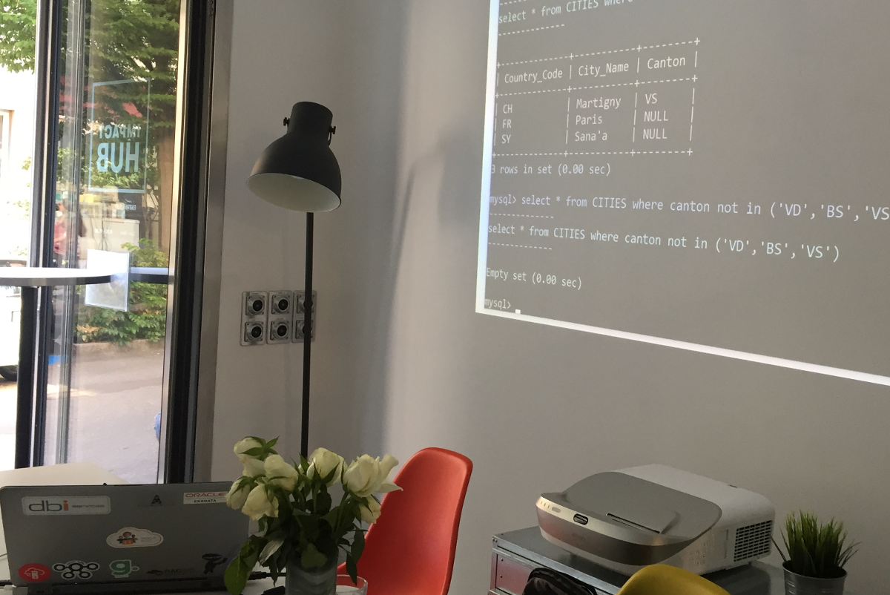
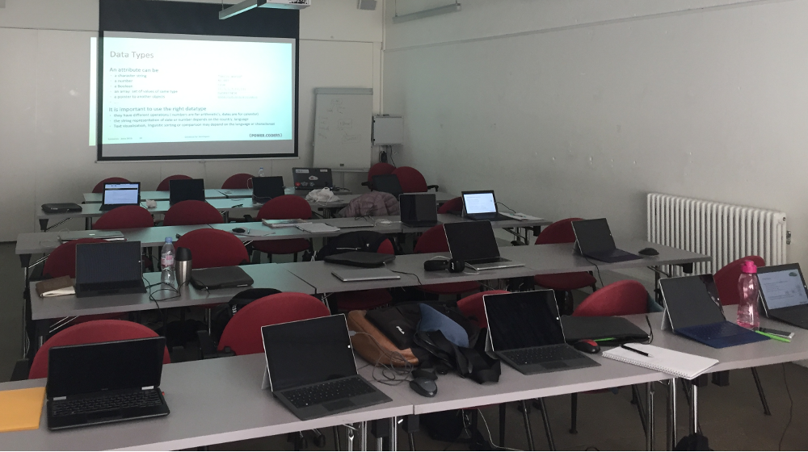
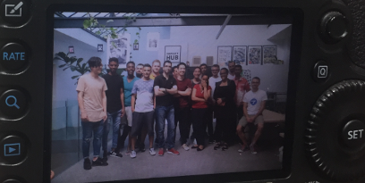

This was first published on https://www.dbi-services.com/blog/introduction-to-database-for-power-coders-with-mysql/ (2018-06-22)
Republishing here for new followers. The content is related to the versions available at the publication date.
.

The big satisfaction is because, with everybody doing their best, things works and everyone gains confidence. It is out of the comfort zone that you can get your best, and that is for the students as well as the teacher and coaches. Because I wanted the course to stay consistent with what they learned in the curriculum, I did the database examples and exercises on MySQL and from PHP code. I never did that so I had to study as well. The big advantage I have, from experience, is that I know where to search on the internet. One of the students told me “don’t tell me to google for it, that’s like swimming in the ocean!”. When you are not used to it ‘googling’ for solutions is not easy. Experienced people do not always consider that and they answer in forums with a rude “RTFM” or “LMGTFY”. I’ve never felt obliged to answer on forums but when I do it, it is not to argue about the OP and his question, and whether he did his own research before. If I choose to answer, then my goal is to explain as clearly as possible. And I do not fear to repeat myself because the more I explain and the better understanding I have about what I explain. I remember my first answers on the dba-village forum. Some questions were recurrent. And each time I tried to answer with a shorter and clearer explanation.

– Day 1 on Data Structures:
Data Modeling, YAML, XML, JSON, CSV and introduction to relation tables.
Exercise: load some OpenFlight data into MySQL
– Day 2 on Introduction to Databases:
RDBMS, create and load tables, normalization
Exercise: a PHP page to query a simple table
– Day 3 on Introduction to SQL:
SELECT, INSERT, DELETE, UPDATE, ACID and transactions
Exercise: a PHP page to list Flights from multi-creteria form
In addition to the course, I also did some coaching for their PHP exercises. I discovered this language (which I do not like – meaningless error messages, improbable implicit conversion,…). But at least we were able to make some concepts more clear: what is a web server, sessions, cookies, access to the database… And the method is important. How to approach a code that doesn’t work, where nothing is displayed: change the connection parameters to wrong ones to see if we go to this part of code, add explicitly a syntax error in the SQL statement to see if errors are correctly trapped, echo some variables to see if they are set. Before learning magic IDEs, we must put the basics that will help everywhere. The main message is: you are never stuck with an error. There is always a possibility to trace more. And when you have all details, you can focus your google search better.
Big thanks to SQLFiddle where it is easy to do some SQL without installing anything. However, being 20 people on a small Wi-Fi, using local resources is preferable. And we installed MAMP (see here how I discovered it and had to fix a bug at the same time). Big thanks to Chris Saxon ‘Database for Developers’ videos which will help the students to review all the concepts in an entertaining way. Thanks to w3schools for the easy learning content.
Oh, and thanks to facebook sponsoring-privacy-intrusive-algorithms! Because this is how I heard about PowerCoders. For the first time of my life, I clicked on a sponsored link on a social media. This was for the WeMakeIt crowdfunding project for this powercoders curriculum in Lausanne. I’ve read about the project. I watched the video and that’s how I wanted to participate in this project. You should watch this Christian Hirsig TED talk as well. At a time where everybody is talking about autonomous self-driven cars, his accomplishment was to move from completely powerless to be back in the driver’s seat…

And of course thanks to Powercoders organizers, students, teachers, coaches, mentors and the companies who propose internships to complete the curriculum (I was happy, and proud of my employer, when dbi-services was in immediately).
Teaching to motivated people who want to learn as much as possible is a great experience, and not all days are like this in the professional life. And explaining topics that are aside of my comfort zone is lot of work, but also a rewarding experience. In this world where technology goes faster and faster, showing the approach and the method to adapt to new topics gives a lot of self-confidence.
{kind=link}
{kind=link}
{kind=link}